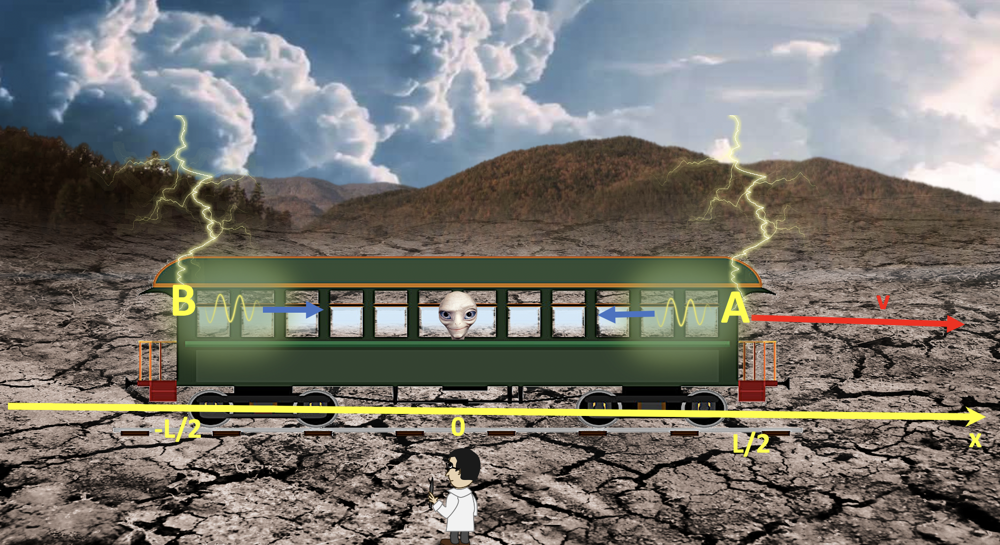

Forrige side🙂 🙁Et tankeeksperimentPADLET

Vi skal enda anta at vi ikke vet noe om Einsteins relativitetsteori. Vi skal nå prøve å tenke slik som Einstein gjorde før han hadde oppdaget relativitetsteorien. Når vi jobber med problemer i relativitetsteori, er det viktig å skrive ned posisjons- og tidskoordinater for eventer. Vi sier at i det dette øyeblikksbildet ble tatt så starter vi en stoppeklokke slik at t = 0 i dette øyeblikket. Da blir koordinatene til event A og B som følger: xA = L/2, tA = 0, xB = − L/2, tB = 0 Enig?